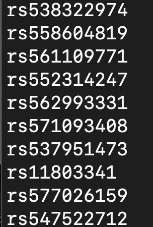
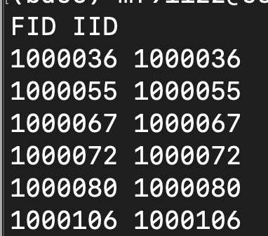

Loop array job by chromosome to run in parallel
Run with high memory
Removed variants with:
Imputation quality score < 0.5,
minor allele frequency (MAF) < 1%,
missing genotype per individual > 5%,
missing genotype per variant > 2%
Hardy-Weinberg equilibrium (HWE) P < 1×10-6
Set major allele as reference allele
#!/bin/bash
#SBATCH --partition=highmem_p
#SBATCH --job-name=genoQC
#SBATCH --nodes=1
#SBATCH --ntasks-per-node=16
#SBATCH --time=144:00:00
#SBATCH --mem=180000
#SBATCH --output=%x.%j.out
#SBATCH --error=%x.%j.err
#SBATCH --array=1-22
i=$SLURM_ARRAY_TASK_ID
cd $SLURM_SUBMIT_DIR
ml PLINK/2.00-alpha2.3-x86_64-20210920-dev
###-=-=-=-=-=-=-=-=-=-=-=-=-=-=-=-=-=-=-=-=-
###GENOTYPE QC PLINK-=-=-=-=-=-=-=-=-=-=-=-=
###-=-=-=-=-=-=-=-=-=-=-=-=-=-=-=-=-=-=-=-=-
genoindir=("/scratch/mf91122/bgen_v1.2_UKBsource")
mfiscoredir=("/work/kylab/mike/UKB/quality-scores/mfi")
keeplist=("/work/kylab/mike/BioxVeg/pheno/keeplist.txt")
outdir=("/scratch/mf91122/BioxVeg/genotypeQC")
mkdir -p $outdir
plink2 \
--bgen $genoindir/ukb_imp_chr"$i"\_v3.bgen ref-first \
--sample \$genoindir/ukb_imp_v3.sample \
--extract $mfiscoredir/ukb_mfi_keepsnps_chr"$i".txt \
--mind 0.05 \
--geno 0.02 \
--hwe 1e-06 \
--maf 0.01 \
--maj-ref \
--keep $keeplist \
--max-alleles 2 \
--export bgen-1.2 bits=8 \
--out "$outdir"/chr"$i"
###-=-=-=-=-=-=-=-=-=-=-=-=-=-=-=-=-=-=-=-=-
###GENERATE SNP FREQUENCY REPORT =-=-=-=-=-=
###-=-=-=-=-=-=-=-=-=-=-=-=-=-=-=-=-=-=-=-=-
freqdir=("/scratch/mf91122/BioxVeg/genotypeQC/freq")
mkdir -p $outdir
plink2 \
--bgen $outdir/chr"$i".bgen ref-first \
--sample $outdir/chr"$i".sample \
--freq \
--out "$freqdir"/chr"$i"Extra input file format:
Keep snps that have INFO > 0.5
head /work/kylab/mike/UKB/quality-scores/mfi/ukb_mfi_keepsnps_chr1.txt 
Keep participants that passed previous Phenotype QC
head /work/kylab/mike/BioxVeg/pheno/keeplist.txt 
wc -l /work/kylab/mike/BioxVeg/pheno/keeplist.txt
#155347
#=155346 participants + header